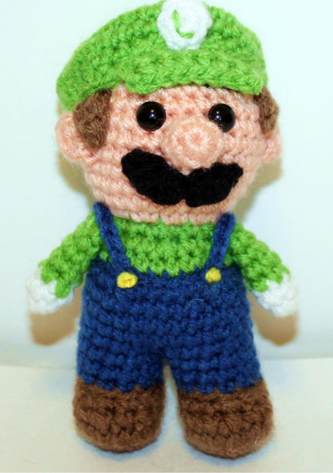
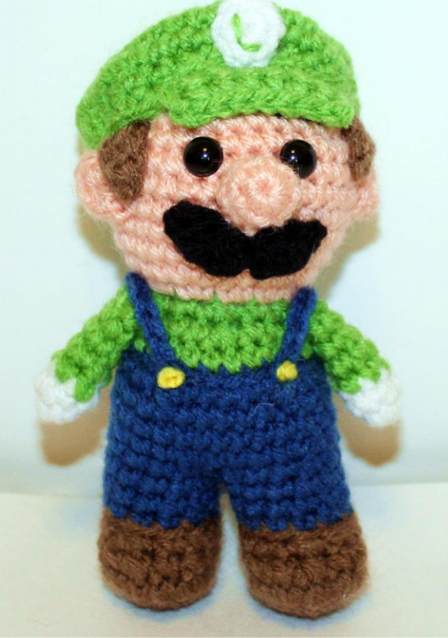
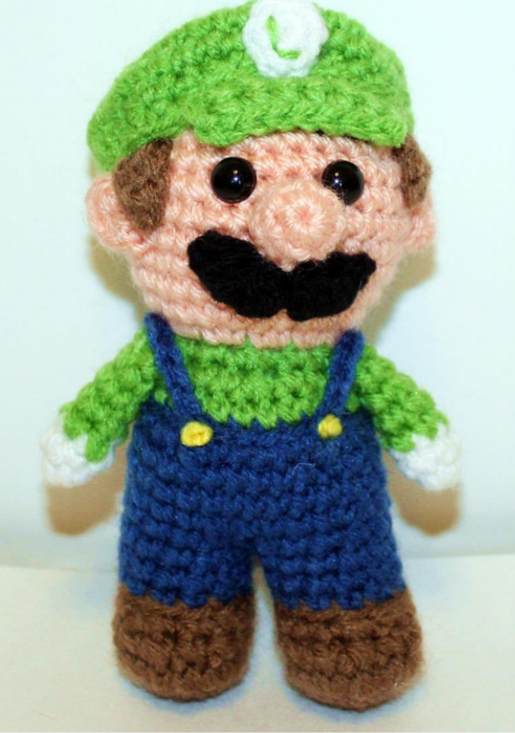

sabe o que é amigurumes? ela é uma arte que tem quase 100 anos de idade rsrsrs. ela surgiu lá no japão e vem crecendo e se popularizando aqui no brazil! neste site, vou mostrar quais são os pontos mais utilizados em amigurumes e como podemos encontrar muitas receitas amigurumis passo a passo! vou mostrar nas imagens abaixo, o que são amigurumes!
